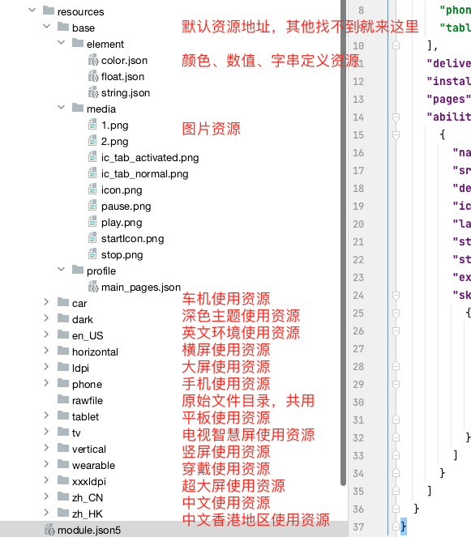
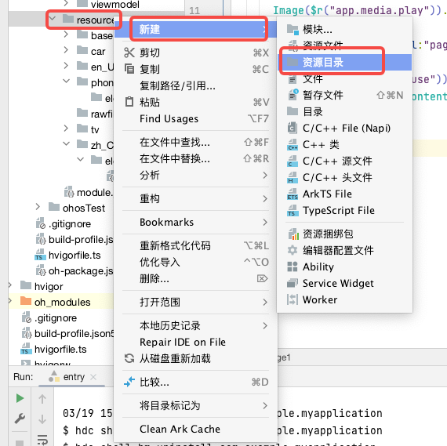
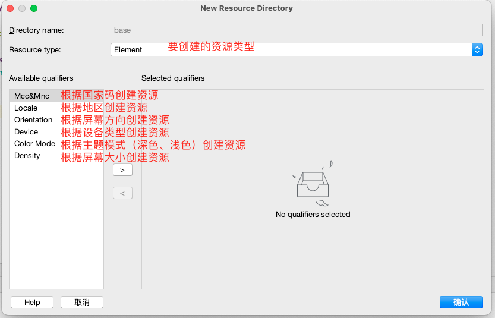
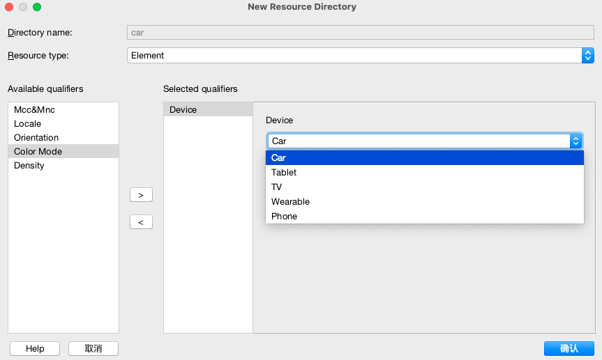

系统资源定义和使用
系统资源定义和使用
1 | 在组件开发中，追求组件在多设备、多语言及“深色模式/浅色模式”的“差异性”。让组件在不同环境中呈现差异化的表现，称之为“多态”。实现组件“多态”的关键技巧在于使用资源。 |

1 | 上图所示，为常用的 |
资源定义
1 | 应用资源由开发者在工程的resources目录中定义，resources目录按照两级目录的形式来组织。 |
资源创建
- 创建arkui项目后，系统会自动生成base资源目录，如果我们要针对不同类型设备做适配，需要在resources目录上点击鼠标右键，选择“新建”，然后选择“资源目录”进行创建，如下图所示：

- 在弹出对话框中选择要创建的资源项目类型

| 限定词类型 | 含义与取值说明 |
|---|---|
| 移动国家码和移动网络码 | 移动国家码（MCC）和移动网络码（MNC）的值取自设备注册的网络。MCC可与MNC合并使用，使用下划线（_）连接，也可以单独使用。例如：mcc460表示中国，mcc460_mnc00表示中国_中国移动。详细取值范围，请查阅ITU-T E.212 （国际电联相关标准）。 |
| 语言 | 表示设备使用的语言类型，由2~3个小写字母组成。例如：zh表示中文，en表示英语，mai表示迈蒂利语。详细取值范围，请查阅ISO 639 （ISO制定的语言编码标准）。 |
| 文字 | 表示设备使用的文字类型，由1个大写字母（首字母）和3个小写字母组成。例如：Hans表示简体中文，Hant表示繁体中文。详细取值范围，请查阅ISO 15924 （ISO制定的文字编码标准）。 |
| 国家或地区 | 表示用户所在的国家或地区，由2~3个大写字母或者3个数字组成。例如：CN表示中国，GB表示英国。详细取值范围，请查阅ISO 3166-1 （ISO制定的国家和地区编码标准）。 |
| 横竖屏 | 表示设备的屏幕方向，取值如下：- vertical：竖屏- horizontal：横屏 |
| 设备类型 | 表示设备的类型，取值如下：- car：车机- tablet：平板- tv：智慧屏- wearable：智能穿戴 |
| 颜色模式 | 表示设备的颜色模式，取值如下：- dark：深色模式- light：浅色模式 |
| 屏幕密度 | 表示设备的屏幕密度（单位为dpi），取值如下：- sdpi：表示小规模的屏幕密度（Small-scale Dots Per Inch），适用于dpi取值为(0, 120]的设备。- mdpi：表示中规模的屏幕密度（Medium-scale Dots Per Inch），适用于dpi取值为(120, 160]的设备。- ldpi：表示大规模的屏幕密度（Large-scale Dots Per Inch），适用于dpi取值为(160, 240]的设备。- xldpi：表示特大规模的屏幕密度（Extra Large-scale Dots Per Inch），适用于dpi取值为(240, 320]的设备。- xxldpi：表示超大规模的屏幕密度（Extra Extra Large-scale Dots Per Inch），适用于dpi取值为(320, 480]的设备。- xxxldpi：表示超特大规模的屏幕密度（Extra Extra Extra Large-scale Dots Per Inch），适用于dpi取值为(480, 640]的设备。 |
- 在选择具体要创建的具体类型，点击确认，在资源树种就会产生相应的文件夹

资源引用
1 | 资源引用主要有两种方式，分别是使用$r()和$rawfile()进行引用，前者主要引用element和图片资源，后者主要引用rawfile目录下的原始文件 |
$r
1 | 资源组目类型包括element、media、profile，用于存放特定类型的资源文件。 |
- $r(value: string, …params: any[]): Resource
- $r(‘belonging.type.name’)
1 | belonging：系统资源或者应用资源，相应的取值为'sys'和'app'； |
- 占位符 %s，%d，%f
1 | 在定义string资源时，可以通过占位符进行占位，在获取资源时在传递具体值替代占位符。 |
$rawfile
1 | 支持创建多层子目录，目录名称可以自定义，文件夹内可以自由放置各类资源文件。 |
$rawfile(‘filename’)
1
2
3
4
5
6$rawfile(value: string): Resource
filename：工程中resources/rawfile目录下的文件名称。
说明： 在引用资源类型时，注意其数据类型要与属性方法本身的类型一致，例如某个属性方法支持设置string | Resource，那么在使用Resource引用类型时，其数据类型也应当为string。 filename需要表示为rawfile目录下的文件相对路径，文件名需要包含后缀，路径开头不可以以"/"开头。
例如：
$rawfile('img.png')
资源匹配
1 | 应用使用某资源时，系统会根据当前设备状态优先从相匹配的限定词目录中寻找该资源。只有当resources目录中没有与设备状态匹配的限定词目录，或者在限定词目录中找不到该资源时，才会去base目录中查找。rawfile是原始文件目录，不会根据设备状态去匹配不同的资源。 |
- 限定词目录与设备状态的匹配规则
1 | 在为设备匹配对应的资源文件时，限定词目录匹配的优先级从高到低依次为：移动国家码和移动网络码 > 区域（可选组合：语言、语言_文字、语言_国家或地区、语言_文字_国家或地区）> 横竖屏 > 设备类型 > 颜色模式 > 屏幕密度。 |
本博客所有文章除特别声明外，均采用 CC BY-NC-SA 4.0 许可协议。转载请注明来自 East'blog！